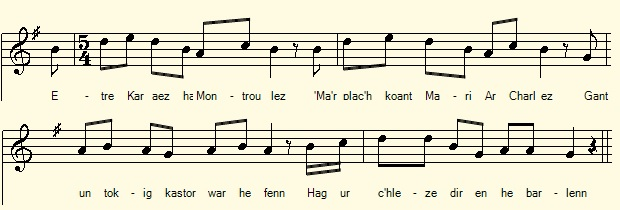
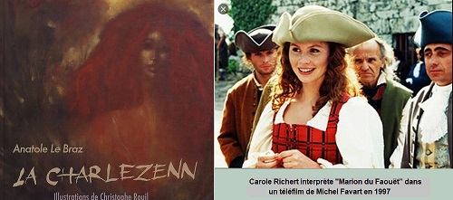

|
A propos de la mélodie: Cette mélodie a été collectée par Maurice Duhamel en Trégor auprès de Maryvonne Le Flemm de Port-Blanc et publiée dans" Musiques bretonnes", p.60, air n°2 (Rouart et Lerolle, 1913). C'est elle qui sert de fond sonore à la présente page. Maurice Duhamel a également recueilli une seconde mélodie, assez proche de la précédente, en Haute-Cornouaille, auprès de Menguy et Léon, à Carhaix. A propos du texte Avant la mise en ligne du carnet n°2 en novembre 2018, ce texte était déjà connu. Il avait été publié dans le "Bulletin de la Société Archéologique du Finistère en 1884", suite à un envoi par La Villemarqué à J. Trévédy , président du Tribunal de Quimper, envoi auquel était jointe la présente traduction. O de Gourcuff avait publié la traduction de cette complainte dans la "Bibliothèque populaire", N°153. Il avait cru pouvoir identifier "Marie la Galante" ou "Marie Charlès" avec Marion du Faouët. Cette indication est erronnée: on trouvera ci-après des extraits du chant "Marc'harit Charlès (Kentel gentañ)", Marguerite Charlès, Première version, tirée de l'ouvrage de F-M. Luzel, "Gwerzioù Breiz-Izel 2ème tome" (1874), p.74. Entre parenthèses sont signalées les strophes du présent chant qui répondent à cette gwerz du Trégor. Le doute n'est guère permis: cette "Mari ar Charlez" est l'adaptation cornouaillaise de Marc'haïd Charlez, où le toponyme "Karahez" (Carhaix) a remplacé "Al Lev-Draez" (La Lieue-de-Grève) inconnue dans la Région du Faouët. Si "Marc'haïd" est devenue "Mari". et si Keranglas a cédé la place à de Rivière, Morlaix est demeuré inchangé. La Lieue-de-Grève, quant à elle, se cache sans doute, à la strophe 24, comme il est dit à la note 4. Une version à peu près identique de ce chant est notée pp. 276-279 avec la remarque "cf. p. 68". Elle comprend: p. 276, les strophes 1 à 3; p. 277, les strophes 5 à 12 (y compris une strophe 3 bis: "En ur vonet dindan ar c'hoad / Ne ra nemet kanañ ha c'hwitellat"= "En entrant dans le bois / Elle n'arrête pas de chanter et siffler"; p. 278, les strophes 13 à 22 (avec quelques variantes: str. 17: "Markiz trubard [traître]..." au lieu de "Markiz, markiz..."; str. 19: "ar ger-mañ" [ville] au lieu de "ar vro-mañ [pays]"]; str. 22: "naontek" [19] au lieu de "tri" [3]; p. 279, les strophes 23 à 29 (avec une variante: str. 28: "Mar 'm-bije va zad d'eus va derc'hel"="si je tenais mon père en mon pouvoir". Ce texte est correctement intitulé: "Mari ar Charlez", "Marie Charlès". Il a été collecté après le chant "Retour des baleiniers" (p.259-261) dont il est dit qu'il le fut le 5 septembre 1879. La première version a été notée p.129-134, avant des chants tels que "Le Cygne" (p. 154) qui figurent dans le Barzhaz de 1845. 34 ans au minimum séparent donc les deux collectes d'une gwerz demeurée pourtant identique. La version du carnet 3 Comme on l'a dit, une troisième version de ce chant a été notée a la fin du 3ème carnet, pages 103 à 105. La date de collecte n'est pas indiquée à la différence de l'identité de l'informateur: "Chanté par Brangolo, sabotier (Koat Skirio)" . Cette version a 4 strophes en commun avec celle du carnet 2. Cependant, il n'y est pas question de le trahison de De Rivière. Après avoir brossé un tableau assez effrayant du camp , jonché d'ossements de Marie Charlès, elle insiste sur l'entente qui règnait au sein de ses troupes. Les 4 dernières strophes présentent Marie comme un Robin-de-Bois féminin, amie des pauvres gens (mais non des gendarmes). Elles concluent la gwerz de façon quasi-religieuse: une bénédiction suivie d'un "amen!" Classification Malrieu Le site tob.kan.bzh classe le chant de Luzel (2 versions) et celui de La Villemarqué sous le même indicatif, M-00161. En revanche il attribue la référence M-00166 au chant "Maria Charlez hag ar Rannaoued" (Marie Charlès et les frères Rannou) collecté sous 2 formes à Plouaret par le seul Luzel en 1865. Il a pourtant trait à des événements tout a fait similaires qui font intervenir les mêmes protagonistes: Yves Rannou, le lieutenant de Marie (ou Marguerite Charlès) dépouille puis tue un marchand. Le seigneur de Kerninon à la tête d'un détachement de soldats se saisit de lui. Pour le chant M-00161, le site totalise 9 versions et 17 occurrences: Maurice Duhamel, Gabriel Milin, J-M de Penguern, F-M; Luzel, Abbé F. Daniel...dont la version du carnet N°2, de La Villemarqué, ce qui est exceptionnel! Ce qui est est également très exceptionnel, c'est qu'en confondant La Charlezenn et Marion du Faouët, La Villemarqué rajeunit de 160 ans environ le chant qu'il étudie! |
About the tune This melody was collected by Maurice Duhamel in Trégor from the singing of Maryvonne Le Flemm of Port-Blanc and published in "Musiques bretonnes", p.60, tune n ° 2 (Rouart and Lerolle, 1913). It provides the sound background for this page. Maurice Duhamel also collected a second melody, quite close to the previous one, in Upper-Cornouaille, sung by Menguy and Léon, in Carhaix. About the text Before book 2 was put online in November 2018, this text was already known. It had been published in the "Bulletin of the Archaeological Society of Finistère in 1884", following a dispatch by La Villemarqué to J. Trévédy, president of the Court of Quimper, to which this translation was attached. O de Gourcuff had published a translation of this ballad in the "Bibliothèque populaire", N ° 153. He believed he could identify "Marie la Galante" or "Marie Charlès" with "Marion du Faouët". This indentification is wrong: below are excerpts from the song "Marc'harit Charlès (Kentel gentañ)", i.e. Margaret Charlès, First version, taken from F-M. Luzel's collection, "Gwerzioù Breiz-Izel 2nd book" (1874), p.74. In parentheses are marked the stanzas of the present song which respond to this gwerz of Trégor. It is hardly doubtable that the present "Mari ar Charlez" is the Quimper area adaptation of Marc'haïd Charlez, where the toponym "Karahez" (Carhaix) replaced "Al Lev-Draez" (La Lieue-de-Grève) unknown in the Faouët Region. If "Marc'haïd" became "Mari". and Keranglas gave way to de Rivière, Morlaix has remained unchanged. La Lieue-de-Grève, for its part, is undoubtedly hiding in stanza 24, as stated in note 4. An almost identical version of this song is noted on pp. 276-279 of Notebook 2 with the remark "see. p. 68". It includes: p. 276, stanzas 1 to 3; p. 277, stanzas 5 to 12 (including a new stanza 3 bis: "En ur vonet dindan ar c'hoad / Ne ra nemet kanañ ha c'hwitellat" = "When entering the woods / She does not stop singing and whistling "; p. 278, stanzas 13 to 22 (with some variations: str. 17: "Markiz trubard [traitor] ..." instead of "Markiz, markiz ..."; str. 19: "ar ger-mañ" [town ] instead of "ar vro-mañ [country]"]; str. 22: "naontek" [19] instead of "tri" [3]; p. 279, stanzas 23 to 29 (with a variant: str. 28: "Mar 'm-bije va zad d'eus va derc'hel" = "if I had my father in my power". This text is correctly titled: "Mari ar Charlez", "Marie Charlès". It was collected after the song "Return of the Whalers" (p.259-261) which is said to have been gathered on September 5, 1879. The first version was noted p.129-134, before songs such as "The Swan" (p. 154) which appear in the Barzhaz of 1845. At least 34 years separate the two recordings of a gwerz remained practically unchanged. The 3rd notebook version As we said, a third version of this song was noted at the end of the 3rd notebook, pages 103 to 105. The date of collection is not stated, unlike the identity of the informant: < i> "Sung by Brangolo, clog maker (Koat Skirio)" . This version has 4 stanzas in common with that in notebook 2. However, there is no question of De Rivière's betrayal. After having painted a rather frightening picture of Marie Charlès' camp, strewn with bones, it emphasizes on the fraternity which reigned within her troops. The last 4 stanzas present Mary as a female Robin-Hood, friend of the poor people (but not of the constables). They conclude the gwerz in a quasi-religious way, by a blessing followed by an "amen!" Malrieu classification The tob.kan.bzh site classifies the songs collected byLuzel (2 versions) and by La Villemarqué under the same code, M-00161. On the other hand, the reference M-00166 applies to the song "Maria Charlez hag ar Rannaoued" (Mary Charlès and the Rannou brothers) collected in 2 forms in Plouaret, only by Luzel, in 1865. It nevertheless relates to quite similar events which involve the same protagonists: Yves Rannou, Marie's (or Marguerite Charlès') adherent who robs and kills a merchant. The Lord of Kerninon at the head of a detachment of soldiers captures him. For song M-00161, the site has a total of 9 versions and 17 occurrences: Maurice Duhamel, Gabriel Milin, JM de Penguern, FM; Luzel, Abbé F. Daniel ... including the version in La Villemarqué's notebook N ° 2, which is exceptional! Very exceptional is also the fact that by confusing La Charlezenn and Marion du Faouët, La Villemarqué makes the song he studies by 160 years younger than it is actually! |
|
BREZHONEK p. 129 / 68 [En marge à droite du texte breton:] 'Mariana ar Faouet' de la 'foret de Skiriaou' [1]. On y amenait des chevaux et des vaches volées que l'on écorchait et [dont on] vendait la chair et la peau .Elle allait aux marchés et demandait de l'argent pour dîner .Quand on lui refusait on était sûr d'etre volé, tant on la redoutait. 1. Etre Karahez ha Montroulez Ma ar plac'h koant Mari ar Charlez. [2] 2. Gant un tokig kastor (avank di)war he fenn Hag ur c'hleze dir en he barlenn. 3. Hag he daou gi-red en he c'hichen Unan a zo du, an all zo gwenn, 4. Markiz Ar Rivier a lavare Da Vari 'r Charlez an deiz a oe: [3] 5. - Eurvad deoc'h-hu, Mari ar Charlez! Chwi vo ma c'homer e Montroulez? 6.- Ha penaoz a yefen-me ganeoc'h (war ho lerc'h) Ha bout an archerien (ar volerien, walerien) war ma lerch? p. 130 7. - Me ho lakayo war ma barlen M'ho tifenno ouzh an archerien (ar volerien, walerien). - - 8. Markiz ar Rivier a lavare E Karahez (er ger a Garahez) ha pa 'n errue: 9. - Ha yeched ha joa barzh ar ger-mañ! Pelech eo 'n ostaliri vrasañ? 10. Pelech eo an ostaliri vrasañ Ha ma yen-me enni da leinañ? 11. Ha ma yen-me da leinañ enni Mari ar Charlez a zo ganin. 12. Ganin ar plac'h(ig) koant Mari 'r Charlez (da reiñ da leinañ da Vari Charlez) Zo ' tont da gomer da Vontroulez. - - 13. Markis ar Rivier a lavare Barzh e Montroulez pa 'n errue: 14. - Ha yec'hed ha joa barzh ar ger-mañ, Na pelec'h eo ar prizon aman? 15. Ar plachig koant Mari ar Charlez Zo ' tont d'ar prison da Vontroulez. - 16. Mari ar Charlez p'he-deus klevet Da Varkiz Rivier he-deus laret: 17. - Markis, markiz (Rivier), m'am-bije gouiet, Birviken tamm n'am-bije debret. 18. M'em-bije lakaet da wad ker yen Vel ma 'z eo an houarn pe ar vein. [en marge gauche verticale au crayon:] Ce ne fut que lorsqu'on lui eut coupé les cheveux qu'on put s'emparer d'elle. Sa force était dans sa chevelure. (Gargasson) p. 131 19. Me am-eus div choar barzh ar ger-mañ Prizjent ket pleg' o fenn da ouelañ; 20. Prizjent ket pleg' o fenn da ouelañ, Vit (o) welout krougañ o c'hoar hennañ. 21. A dra sur, ma karje va lezvamm Bout roet din boued, d'eus ma ezhomm, 22. Me na vije ket sur bet kavet Tri deiz ' korn ar parkig banalek, 23. Tri deiz ' korn ar parkig banalek Hep debriñ nag evañ man ebet! 24. Etre (barzh) Karahez ha Montroulez Ez eus ur bod (broust) koad karget a zrez: [4] [5] 25. Liesoc'h a benn marv zo ennañ Vit na 'z euz e garnel ar ger-mañ. 26. Vit na 'z euz e garnel ar ger-mañ. Ha me 'm-eus sikouret o lazhañ. - 27. Mari ar Charlez a lare E barr an huellañ pa bigne: 28. - Me ne refen forzh dimeus mervel, Mar 'm-bije un darn d'eus ma goulenn: 29. Me garfen kavout kalon ma zad Etre an douar ha plant ma zroad! - "Mari ar Faouet vivait vers 1700. Elle avait 100 voleurs à ses ordres ne se cachait pas était suivie de deux chiens; un noir, lautre blanc, elle donnait des couteaux, etc. a ses amis pour les préserver, On ne lui refusait rien [ ?]" [En marge à gauche verticalement] "Elle n'avait que 24 ans quand (elle partit ?) Elle était remarquablement belle." [En marge à droite au crayon] 'Mari Finn-fond' (c.a d.) "tres fine", tres madrée,capable de tout. (filouter fin ) (Gargasson) (chute de "Noyal") [6]. KLT gant Christian Souchon |
TRADUCTION FRANCAISE p. 129 / 68 [En marge à droite du texte breton:] 'Mariana ar Faouet' de la 'foret de Skiriaou' [1]. On y amenait des chevaux et des vaches volées que l'on écorchait et [dont on] vendait la chair et la peau .Elle allait aux marchés et demandait de l'argent pour dîner .Quand on lui refusait on était sûr d'etre volé, tant on la redoutait. 1. Entre Carhaix et Morlaix Habite la jolie fille Marie la Galante. [2] 2. Elle porte un petit chapeau de castor sur la tête Et une épée d'acier au côté. 3. Elle est suivie de deux chiens courants Dont l'un est noir et l'autre blanc, 4. Le marquis de Rivière disait A Marie la Galante ce jour-là: [3] 5. - Bonheur à vous, Marie la Galante! Voulez-vous être ma commère à Morlaix? 6.- Et comment irai-je avec vous Quand les archers sont à mes trousses? p. 130 7. - Je vous prendrai entre mes bras Et je vous défendrai des archers. - - 8. Le Marquis de Rivière disait En arrivant à Carhaix: 9. - Bonne santé et joie en cette ville! Où est la plus grande hôtellerie? 10. Où est la plus grande hôtellerie Pour que j'y aille dîner? 11. Pour que j'y aille dîner. Marie la Galante est avec moi. 12. Avec moi le jolie Marie le Galante (pour que j'offre à dîner à Marie la Galante) Qui va pour être commère à Morlaix. - - 13. Le marquis de Rivière disait En arrivant à Morlaix: 14. - Bonne santé et joie en cette ville, Où est la prison ici? 15. C'est la jolie fillette Marie la Galante Qui va en prison à Morlaix. - 16. Marie la Galante, entendant cela, Dit au marquis de Rivière: 17. - Marquis, marquis, si j'avais su, Je n'aurais jamais mangé morceau. 18. Avant que j'eusse rendu ton sang Plus froid que le fer ou la pierre. [en marge gauche verticale au crayon:] Ce ne fut que lorsqu'on lui eut coupé les cheveux qu'on put s'emparer d'elle. Sa force était dans sa chevelure. (Gargasson) p. 131 19. J'ai deux soeurs à la maison qui ne Daigneraient pas baisser la tête pour pleurer; 20. Daigneraient pas baisser la tête pour pleurer; En voyant pendre leur soeur aînée. 21. Ah sûr, si ma belle-mère m'avait Donné ma nourriture selon mes besoins, 22. Je n'aurais pas été trois jours Au coin d'un champs de genêts, 23. Au coin d'un champs de genêts, Sans boire ni manger! 24. Entre Carhaix et Morlaix Il y a un fourré rempli de ronces: [4] [5] 25. Où il y a plus de têtes de morts Qu'il n'en est dans l'ossuaire de cette ville. 26. Qu'il n'en est dans l'ossuaire de cette ville. Et j'ai aidé à les tuer. - 27. Marie la Gallante disait en montant Le dernier degré de la potence: 28. - Peu m'importerait de mourir, Si j'obtenais une partie de ma demande: 29. Je voudrais tenir le coeur de mon père Entre la terre et la plante de mon pied! - "'Mari ar Faouet' vivait vers 1700. Elle avait 100 voleurs à ses ordres ne se cachait pas était suivie de deux chiens; un noir, lautre blanc, elle donnait des couteaux, etc. a ses amis pour les préserver, On ne lui refusait rien [ ?]" [En marge à gauche verticalement] "Elle n'avait que 24 ans quand (elle partit ?) Elle était remarquablement belle." [En marge à droite au crayon] 'Mari Finn-fond' (c.a d.) "tres fine", tres madrée,capable de tout. (filouter fin ) (Gargasson) (chute de "Noyal") [6]. Traduction de La Villemarqué |
ENGLISH TRANSLATION p. 129 / 68 [ In the margin on the right of the Breton text:] 'Mariana ar Faouet' from the 'Skiriaou forest' [1]. They brought stolen horses and cows that were skinned and [whose flesh and skin were sold]. She went to the markets and asked for money for dinner. Whoever refused to give her was sure to be robbed. Therefore they were afraid of her. 1. Between Carhaix and Morlaix The pretty girl Marie la Galante lives. |2] 2. She wears a little beaver hat on her head And a steel sword by the side. 3. She is followed by two running dogs One of which is black and the other white, 4. The Marquis de Rivière said To Marie la Galante that day: [3] 5. - Happiness to you, Marie la Galante! Do you want to be a godparent with me in Morlaix? 6.- And how could I go with you When the constables are after me? p. 130 7. - I will put my arm around your waist And I will defend you from constables. - - 8. The Marquis de Rivière said Arriving at Carhaix: 9. - Good health and joy in this city! Where is the biggest inn around here? 10. Where is the biggest hotel So I can go to dinner there? 11. So I can have dinner there. Marie la Galante is with me. 12. With me the pretty Marie la Galante (so that I can offer dinner to Marie la Galante) Who goes to be gossip in Morlaix. - - 13. The Marquis de Rivière said Arriving at Morlaix: 14. - Good health and joy in this city, Where's the prison here? 15. It's the pretty little girl Marie la Galante Who goes to prison in Morlaix. - 16. Marie la Galante, hearing that, Said to the Marquis de Rivière: 17. - Marquis, marquis, if I had known, I would never have eaten a piece. 18. Before I made your blood Colder than iron or stone. [in the vertical left margin in pencil:] It wasn't until they cut her hair that they could seize her. Her strength was in her hair. (Gargasson) p. 131 19. I have two sisters at home who Would not deign to bow their heads to cry; 20. Would not bow down to cry; Seeing their elder sister hanging. 21. Ah sure, if my mother-in-law had Given me food according to my needs, 22. I wouldn't have been three days At the corner of a broom field, 23. At the corner of a broom field, Without eating or drinking! 24. Between Carhaix and Morlaix There is a thicket full of brambles: [4] [5] 25. Where there are more skulls That there are in the ossuary of this city. 26. That there are in the ossuary of this city. And I helped kill them. - 27. Marie la Gallante said while going up The last degree of the gallows: 28. - I don't care if I die, If I get part of my request: 29. I would like to hold my father's heart Between the earth and the sole of my foot! - "'Mari ar Faouet' lived around 1700. She had 100 thieves at her orders. She did not hide but was always followed by two dogs; one black, the other white, she gave knives, etc. to her friends to defend themselves, They could refuse her nothing [?] " [Left margin vertically] "She was only 24 when (she left?) ... She was remarkably beautiful. " [Right margin in pencil] 'Mari Finn-fond' (ie) "very fine", very cheered up, capable of anything. (filouter fin) (Gargasson) (conclusion of "Noyal") [6]. |
|
BREZHONEK Mari ar Jarlez. Chanté par Brangolo Sabotier (Koat Skirio.) 1. (1) Etre Karahez ha Montroulez, M'edo ar plarch koant Mari r Jarlez ; 2. (2) Un tokig (du) (kastor) ganti war he fenn, Hag ur chleze dir war he barlenn, 3. Ha dindani un inkane wenn. Ha daou gi red bras, en he ar-benn. 4. (3) Ha daou gi red braz en he arbenn, Unan a zo du, an all zo gwenn ... 5. (4) Hag en he dorn ur chwitell archant. Mari ar Jarlez a zo plach koant ! 6. Koantañ plach zo bet gwelet biskoazh Mari ar Jarlez er forest glas ; 7. Eno ema 'n he flijadurezh Noz deiz dindan an delioù nevez. 8. (24) Hag e-kreizig (kreiz) ar c'hae kelvez, Ez eus ur brouskoad karget a zrez. 9. (25) Liesoch a benn-marv zo ennañ Vit na n'eus ar charniel er ger mañ. 10. Pennoù deñved ha pennoù maout Pennoù oc'hen ha pennoù saout 11. Gwelloc'h ar chig da vouetañ Kent ar c'hig laeret da werzañ 12. Hag ur c'harzh uhel eskern war-dro Gwenn-kann gant 'n avel hag ar glav. 13. Ganti he-deus kant bugel brav No gourvez ha stouet ho fennoù. 14. Ha ganti kant d'eus he faotred vat Tomm a galon koulz ha skañv a droad, 15. Ha ganti kant d'eus he faotred vat. War ar varr ganti d'ober cher-vat, 16. - Ha c'hwi denig paour o vont e-biou, Tostait d'evañ eul lomm pe zaou, 17. Ma gresko ho nerzh hag ho yeched O vale noz-deiz 'vel ma rit. 18. Ha c'hwi a gano ur zon nevez En enor da Vari ar Jarlez. 19. C'hwi a laouenai ar c'halonoù Ha dreist-holl re zo er c'hoajoù [1] 20. Va bennozh da Vari 'r Jarlez Ha d'he baotred vat a ran ivez, 21. Va bennozh da Vari 'r Jarlez Na zispriz ket 'n dudigoù kaezh. 22. 'N dudigoù kaezh he char meurbet, Vit 'n archerien ne laran ket, 23. Doue r'he diwallo da viken D'eus pep dañjer ha 'n archerien! Amen KLT gant Christian Souchon |
TRADUCTION FRANCAISE Mari ar Jarlez. Chanté par Brangolo Sabotier (Coat Squiriou.) 1. (1) C'est entre Carhaix et Morlaix, Que vivait la belle Marie Charlès ; 2. (2) Portant un chapeau (noir) (de castor) sur la tête, Et une épée à la taille, 3. Montant un cheval d'amble blanc Deux grands chiens courants la précédaient. 4. (3) Deux grans chiens courants la précédaient, L'un noir et l'autre blanc ... 5. (4) Dans sa main un sifflet d'argent. Marie Charlès a un air charmant! 6. La plus jolie fille qu'on ait jamais vue Courir les vertes forêts, c'était Marie Charlès ; 7. C'est là qu'elle était heureuse Nuit et jour, sous les vertes frondaisons. 8. (24) Or, parmi les haies de noisetiers, Se trouve un massif de ronces. 9. (25) On y trouve plus de têtes de morts Que dans le charnier de la ville. 10. Têtes de brebis et têtes de béliers Têtes de boeufs et têtes de vaches 11. Dont il vaut mieux manger la viande Que la voler pour la revendre. 12. Et une haie d'ossements tout autour Blanchis par le vent et la pluie. 13. Elle dirige cent gaillards Qui jamais ne s'inclinent ou baissent la tête. 14. Elle dirige cent hommes braves Au coeur chaud et au pied léger, 15. Elle dirige cent gais lurons Ses commensaux avec qui elle fait bonne chère 16. - Et vous, pauvre homme qui passez, Venez donc boire un verre ou deux, 17. Cela vous donnera force et santé Vous qui cheminez nuit et jour. 18. Et vous chanterez une chanson nouvelle En l'honneur de Marie Charlès. 19. Vous réjouirez les coeurs En particulier ceux des habitants des bois [1] 20. Bénie soit Marie Charlès Tout comme ses braves compagnons, 21. Bénie soit Marie Charlès Qui ne méprise pas les malheureux. 22. Les malheureux elle les chérit Autant qu'elle hait les gendarmes, 23. Que Dieu la protège à jamais Des dangers et de la maréchaussée! Amen [1] Les habitants des bois: en particulier les sabotiers, corporation à laquelle appartient Brangolo. Traduction Christian Souchon |
ENGLISH TRANSLATION Mari ar Jarlez . Sung by Brangolo Sabotier (Coat Squiriou.) 1. (1) It is between Carhaix and Morlaix, What lived pretty Marie Charlès; 2. (2) Wearing a (black) (beaver) hat on her head, And a sword round her waist, 3. Riding a white amble horse Two big hounds preceded her. 4. (3) Two big hounds preceded her, One black and the other white ... 5. (4) In her hand a silver whistle. Marie Charlès very good-looking! 6. The prettiest girl who was ever seen Riding through the green forests was Marie Charlès; 7. This is where she was happy Night and day, under the green foliage. 8. (24) Now, among a maze of hazelnut hedges, There is a cluster of brambles. 9. (25) There are more skulls in it That in the mass grave of the city. 10. Sheep heads and rams heads Heads of oxen and heads of cows 11. Whose meat is better to eaten Than resold, once stolen 12. And a hedge of bones all around That are bleached by wind and rain. 13. She leads a hundred fellows Who never bend or bow their heads. 14. She leads a hundred brave men With a warm heart and a light foot, 15. She leads a hundred gay men Her companions with whom she share her meals. 16. - And you, poor man who passes by, Come and have a drink or two, 17. It will give you strength and health You who walk day and night. 18. And you will sing a new song In honour of Marie Charlès. 19. You will rejoice the hearts In particular those of the dwellers of the woods [1] 20. Blessed be Marie Charlès And all her brave companions, 21. Blessed be Marie Charlès Who does not despise the poor. 22. She cherishes the porr As much as she hates the gendarmes, 23. May God protect her forever Against dangers and the constabulary! Amen [1] The inhabitants of the woods: in particular the clog makers, a corporation to which Brangolo belongs. |

|
[1] "Mari ar Charlez" est-elle "Marion du Faouët"? A en juger par les annotations inscrites dans son carnet, La Villemarqué semble le croire, partageant en cela l'avis du chanteur, un nommé Gargasson qui lui fournit plusieurs détails sur l'héroïne de la chanson:
Le bois de Squiriou appartient à la paroisse de Berrien, située effectivement entre Morlaix et Carhaix. C'est le juge Trévédy qui donne cette précision dans la "Revue de Bretagne et de Vendée" de 1890, tome 3, p. 444, tout en remarquant que "cette allégation est absolument contredite par la procédure" (à l'encontre de Marion du Faouët). C'est certainement La Villemarqué qui lui indiqua que son informateur était un "vieux chanteur qui, en 1840, chantait cette ballade" On notera que le bois de Squiriou (Koad Skiriou) est, selon une indication figurant p.156 du carnet N°2, le lieu où demeure la sabotier Brangolo qui enseigna à Villemarqué le chant Le cygne ainsi que, si la mention portée dans le Barzhaz de 1845 est exacte, le chant Le faucon. D. Laurent pensait avoir repéré ce lieu-dit en Quéménéven (entre Quimper et Chateaulin). F. Gourvil, quant à lui (p. 355 de son 'La Villemarqué"), remarquait que les lieux-dits comportant le mot "Skirioù" sont tous situés loin des Montagnes Noires. On est amené à se demander si "Gargasson" et "Brangolo" ne seraient pas une seule et même personne. Le site "Geneanet" confirme que (Le) Gargasson est un nom qu'on trouve dans le Morbihan et que c'était sans doute à l'origine le surnom (français) d'un gourmand (gargate=gosier). On remarque qu'une 3ème version de ce chant, notée par La Villemarqué, pp 103-105 du carnet 3 est imputée au sabotier Brangolo de de Koat Skirioù et que ce chant vient après la gwerz "La Vierge" datée d'octobre 1863. Cela semblerait indiquer que le collecteur a rencontré ce personnage à deux reprises, espacées de vingt ans environ. Dans sa nouvelle, Anatole Le Braz, en parlant de la Charlezenn, la dit rousse: "Ses cheveux déplaisaient, à cause de leur couleur. On a en Basse-Bretagne un préjugé contre les rousses. Ils étaient cependant magnifiques, ses cheveux. Amples et fournis comme une toison, rutilants comme une crinière. On eut dit, autour de sa tête, un buisson ardent, une broussaille de feu. Ses yeux, en revanche, étaient d'un bleu tranquille..." Dans le téléfilm de 1997, "Marion du Faouët", interprétée par Carole Richert, arbore une magnifique tignasse rousse qui ne peut toutefois rivaliser avec l'imposante crinière de la Charlezenn imaginée par le peintre Christophe Rouil pour illustrer la nouvelle d'Anatole Le Braz parue aux Editions Apogée en 2011 (cf. ill. ci-dessous). [2] Le texte de la chanson contredit ces indications sur plusieurs points: "Galant" provient d'un mot germanique qui subsiste dans l'allemand "wallen": "bouillonner" en parlant d'un liquide. C'est certainement dans ce sens etymologique (Marie la Bouillante) que le Barde entendait le mot "Galant". Le mot, passé en anglais sous la forme "gallant" y a pris le sens de 'courageux', peut-être sous l'influence du presque-homonyme "valiant" (vaillant, qui vient du verbe "valoir"). [3] Marion du Faouët (ou "Marion Finefont" comme l'a noté La Villemarqué) s'appelait Marie-Louise Tromel, née au Faouët, le 6 mai 1717 et pendue à Quimper le 2 août 1755 (à l'âge de 38 ans). Elle n'avait qu'une soeur et 3 frères. Sa carrière de bandit de grand chemin qu'elle commença à l'âge de 23 ans se limita à la Cornouaille: Port-Louis, Saint-Caradec, Le Faouët, Quimperlé. A la tête d'une bande de 40 hommes, elle dépouillait sans effusion de sang les riches marchands qui revenaient des foires et des pardons. Arrêtée plusieurs fois, elle s'évade ou obtient sa libération grâce à des protections. Finalement elle est arrêtée à Nantes et exécutée à Quimper. Plusieurs de ses complices survivent à son arrestation et à son exécution, et continuent leurs exactions. Les dernières exécutions ont lieu en 1764. Marion bénéficie d'une réputation populaire favorable de "Robin des Bois féminin", ne volant que les riches et protégeant les pauvres. Cela ne semble pas tout à fait correspondre à la réalité historique. Ce n'est certainement pas l'héroïne de la chanson notée par La Villemarqué. [4] Marguerite Charlès dite "La Charlézenn" donne son nom à l'une des "Vieilles histoires du pays bretons" publiées par Anatole Le Braz en 1893; Le chapitre "Charlezenn" est de toute évidence composé à partir des différentes versions des chants collectés par son ami Luzel au sujet de cette sulfureuse héroïne. Il s'est égalemnt inspiré d'un article publié par le même Luzel dans la "Revue de Bretagne et de Vendée", 1865, 2ème série, tome 8, pp.315 - 320, La carrière de voleuse et de meurtrière de cette Charlézenn, à la tête d'une bande de brigands qu'elle commande de loin au moyen d'un sifflet d'argent doré (c'hwitell arc'hant alaouret), eut pour cadre le Trégor, et plus particulièrement la région de Plestin- les-Grèves, au 16ème siècle, pendant les guerres de religion, quand la disette et les épidémies sévissaient dans tout le pays. La Lieue-de-Grève (Al Lev-Draez) et la Roche Verte (Roc'h-al-Lazh) où passe la route de Morlaix à Lannion était le site redouté des voyageurs où la Charlezenn aidée des frères Rannou exerçait sa coupable industrie. Luzel nous fournit quelques précisions quant aux autres noms propres qui apparaisent dans ses gwerzioù: A noter que Luzel a collecté un chant, "Les Rannou", où "Maria Charlez" semble avoir succédé à Marcharit Charlez, sa mère peut-être. Peut-être notre chant a-t-il trait à la même personne. On peut en douter. [5] Si l'on date cette histoire de 1596 , c'est que c'est l'année où le corps expéditionnaire espagnol conduit par le général Juan d'Aguila, débarqué au Blavet en 1590, arriva dans la commune de Trédurer où se trouve le bois de Coat-an-Drezenn. Cette indication est donnée par Luzel à propos d'une 2ème version de Marguerite Charlès qui raconte que le roi dEspagne a levé une armée de 500 hommes pour purger ("sarcler") Coat-an-Drezenn des brigands qui la hantent (Ar roue Spagn ... un arme neve 'n-eus savet/ 'n-eus kaset pemp kant 'n ur vandenn / 'n esper c'hwennat Koad-an-Drezenn). Mais ils nosèrent pas entrer dans le bois en entendant Marguerite siffler. Le seigneur de Keranglas leur dit : « Dites au roi quelle sera chez moi demain midi ». [6] "Chute de Noyal": peut-être faut-il comprendre que l'on trouve ce même genre de discours du condamné du haut de l'échafaut dans la gwerz k15. Le clerc Le Loyer. |
[1] Is "Mari ar Charlez" identical with "Marion of Faouët"? Judging by the annotations written in his notebook, La Villemarqué seems to believe it, sharing in this the opinion of the singer, a man named Gargasson who provides him with several details on the heroine of the song:
Squiriou Wood belongs to the parish Berrien, between Morlaix and Carhaix, as stated in the song. It is Judge Trévédy who gives this precision in the "Revue de Bretagne et de Vendée" of 1890, volume 3, p. 444, while noting that "this allegation is absolutely contradicted by the procedure" (against Marion of Faouët). It was certainly La Villemarqué who told him that his informant was an "old man who sang this ballad in 1840". It will be noted that the wood of Squiriou (Koad Skiriou) is, according to an indication appearing p.156 of the notebook N ° 2, the place where remains the clog maker Brangolo who taught Villemarqué the song The swan as well as, if the mention in the Barzhaz of 1845 is correct, the song The Hawk. D. Laurent thought he had spotted this place in Quéménéven (between Quimper and Chateaulin). F. Gourvil, meanwhile, (p. 355 of his' La Villemarqué "), noted that the localities containing the word" Skirioù "are all located far from the "Black Mountains". We are led to wonder if "Gargasson" and "Brangolo" could not be one and the same person. The "Geneanet" site confirms that (Le) Gargasson is a name found in Morbihan and that it was probably originally the (French) nickname of a gourmet (gargate = throat). We notice that a 3rd version of this song, recorded by La Villemarqué, pp 103-105 of notebook 3 is ascribed to the clog maker Brangolo of Koat Skirioù and that this song comes after the gwerz "The Virgin" dated October 1863. This could suggest that the collector met said Brangolo on two occasions, spaced about twenty years apart. In his short story, Anatole Le Braz, speaking of Charlezenn, says she was red-haired: "Her hair was unpleasant, because of its colour. We have a prejudice against red-haired people in Lower Brittany. However, her hair was magnificent. It was like a fleece and gleaming like a mane. It looked like a burning bush around her head, a brush in fire. Yet her eyes were of deep, calm blue ... "In the 1997 TV movie , "Marion du Faouët", interpreted by Carole Richert, sports a magnificent red mop which cannot however compete with the imposing mane of Charlezenn imagined by the painter Christophe Rouil to illustrate the short story by Anatole Le Braz published by Editions Apogée in 2011 (see pict. below). She gave a knife to each of her associates as a symbol of alliegeance to her; She left (= she started her career?) when she was 24 years old. It was also dubbed "Mari Finn-fond", (Marion Finefont), that is to say the very clever one, as in the expression "filouter fin". [2] The song text is at variance with this information on several points: . "Gallant" comes from a Germanic word which subsists in the German "wallen": "to bubble" applying to a liquid. It is certainly in this etymological sense (the buoyant girl Mary) that the Bard meant the word "Gallant". The word, passed in English with the meaning of "courageous", perhaps under the influence of the almost-homonymous "valiant" (valiant, which comes from the verb "valoir", "to be worth"). [3] Marion du Faouët (or "Marion Finefont" as noted by La Villemarqué) was the nickname of Marie-Louise Tromel, born in Faouët, May 6, 1717 and hanged in Quimper on August 2, 1755 ( age 38). She had only one sister and 3 brothers. She started her as a highwaywoman at the age of 23. Her scope of action was limited to the Quimper area: Port-Louis, Saint-Caradec, Le Faouët and Quimperlé. At the head of a gang of 40 men, she robbed the rich merchants on their way back from fairs and pardons without ever shedding blood. She was arrested several times, but always escaped or obtained her release thanks to protections. Finally she was arrested in Nantes and executed in Quimper. Several of her accomplices survived her capture and execution, and continued their abuses. The last executions took place in 1764. Marion enjoys a favorable popular reputation of "a female Robin Hood", robbing the rich to pay the poor. This does not seem to correspond entirely to historical truth. She is definitely not the heroine of the song recorded by La Villemarqué. [4] Marguerite Charlès, also known as "La Charlézenn", gives her name to one of the "Old stories of the Breton country" published by Anatole Le Braz in 1893; The chapter "Charlezenn" is obviously based on the different versions of the songs collected by his friend Luzel about this devilish heroine. It was also inspired by an article published by the same Luzel in the "Revue de Bretagne et de Vendée, 1865, 2nd series, part 8, pp.315 - 320, The career of thief and murderess of this Charlézenn, at the head of a gang of brigands whom she commanded from afar by means of a golden silver whistle (c'hwitell arc'hant alaouret), was developed in Trégor, and more particularly the area around Plestin-les-Grèves, in the 16th century, during the wars of religion, when famine and epidemics raged throughout the country. La Lieue-de-Grève (Al Lev-Draez) and La Roche Verte (Roc'h-al-Lazh) are, on the road from Morlaix to Lannion, a dreaded site for travellers where Charlezenn helped by the Rannou brothers carried on her shameful trade. Luzel provides us with some details about the other proper names that appear in his gwerzioù: Note that Luzel collected a song, "Les Rannou", where a "Maria Charlez" seems to have succeeded "Marcharit Charlez", possibly her mother. That our song could be about the same person is doubtful. [5] If we date this story from 1596, it is because this is the year in which the Spanish expeditionary force led by General Juan d'Aguila, landed at Blavet in 1590, reached the parish Trédurer and Coat-an-Drezenn wood. This information is given by Luzel in connection with a 2nd version of "Margaret Charlès" stating that the king of Spain raised an army of 500 men to round up ("weed") the brigands of Coat-an-Drezenn (Ar roue Spagn ... un arme nevez 'n-eus savet /' n-eus kaset pemp kant 'n ur vandenn /' n esper c'hwennat Koad-an-Drezenn). But they dared not enter the wood when they heard Margaret's whistle. The lord Keranglas said to them: - "Tell the king that she will be captured tomorrow noon". [6] "Conclusion of Noyal": perhaps are we to understand that this kind of speech of a condemned man from the top of the scaffold concludes the gwerz k15. Clerk Le Loyer. |
|
BREZHONEK Mar eo homañt ar Charlezenn A c'hwitelle war bouez he fenn O na eo ket ur seblant vat Klevet ar Charlezenn ' c'hwitellat. (=4) 'N aotrou Keranglas a lare D'e bajig bihan an deiz ' oe: "Eomp sioulig amañ souden Gant aon 'glevfe ar Charlezenn. Rak ma hon klev ar Charlezen,n Ez omp marv bremañ souden." Oa ket e c'her peurlavaret, Ar Charlezenn a zo degouet. "Aotrou Keranglas, din laret Pelec'h e aet pelec'h oc'h bet? Pelec'h e aet pelec'h oc'h bet? Pelec'h eus-hoc'h esper monet?" ... (=5) "O klask ur c'homper me zo bet C'hwi vo ar gomer mar karet. .. . (=27) Ar Charlezenn a lavare 'R vazh uhellañ 'r skeul pa bigne:... (=24) Tre Montroulez hag al Lev-Draez A zo ur c'hoadig leun a drez (=25) Ker lies korf marv zo ennañ Hag 'zo e karnel ar ger-mañ. (=26) Hag 'zo e karnel ar ger-mañ. Poent awalc'h eo va distrujañ! |
TRADUCTION FRANCAISE C'est celle-là la Charlès Qui siffle à tue-tête Et ce n'est pas bon signe Que d'entendre siffler la Charlès. Le seigneur de Keranglas disait A son petit page un jour: - Passons en silence par ici De peur que la Charlès ne nous entende. Car si la Charlès nous entend, Nous sommes morts dans l'instant. - Il n'avait pas fini de parler Que la Charlès est arrivée: - Seigneur de Keranglas, dites-moi, Où avez-vous été, où étiez-vous? Où avez-vous été? où étiez-vous? Où avez-vous l'espoir d'aller ? ... (=5) Je suis allé chercher un parrain. Vous serez la marraine, si vous le voulez. ... (=27) La Charlès disait En montant sur le dernier barreau de l'échelle:... (=24) Entre Morlaix et la Lieue-de-Grève Il est un petit bois plein de ronces (=25) Il y a là autant de corps enfouis Que dans l'ossuaire de cette ville. (=26) Que dans l'ossuaire de cette ville. Il est temps de me mettre hors de nuire! |
ENGLISH TRANSLATION This is the Charlès girl Whistling loudly And it's no good omen To hear the Charlès girl whistle. The Lord Keranglas said One day to his little page: - Let's go over here without a word Lest the Charlès girl hear us. Because if Charlès hears us, We are dead the next moment. - He hadn't finished talking When the Charlès girl turned up: - Lord Keranglas, tell me, Where have you been, whither do you go? Where have you been? whither do you go? Whither do you hope to go? ... (= 5) I am looking for a godfather [for my child]. You could be the godmother, if you want. ... (= 27) The Charlès girl said When ascending the last rung of the ladder: ... (= 24) - Between Morlaix and Lieue-de-Grève There's a thicket full of brambles. (= 25) There are so many bodies buried there, More than in the ossuary of this town. (= 26) More than in the ossuary of this town. It's time to get me out of harm's way! - |